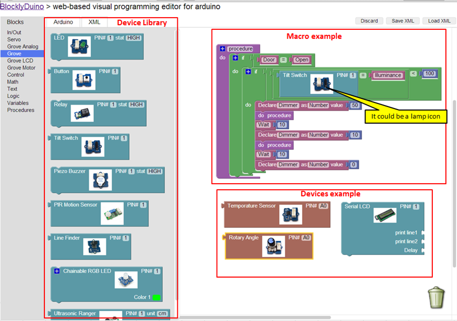

I'm no programmer, I understand the basic concept of Java and some other languages, but I'm always very curious to find practical and effective solutions.
I've been looking at what Zipato offers and I think that is an excellent tool, but they have even a stone in the heel, they are not open source and they do not have a custom panel Interfas as OR.
I have found Blockly of Google, maybe you already know this tool, but as I have not found anything yet about this tool in the forums of OR and for this reason I decided to make this notation on this topic.
Ok,
A short summary about Blockly::
Blockly is a web-based, graphical programming editor. Users can drag blocks together to build an application. No typing required.
Blockly is designed to easily install into your web application. Users drag blocks around, Blockly generates code, your application does something with that code. From your application's point of view Blockly is just a textarea in which the user types syntactically perfect JavaScript, Python, or other language.
Blockly is 100% client-side, requiring no support from the server (unless one wants to use the cloud-storage feature). There are no 3rd party dependencies (unless one wants to recompile the core). Everything is open source.
If you do not need to modify the code, you can use our public server at http://blockly-demo.appspot.com. Installation is only recommended for developers who wish to modify or add source code.
I think Blockly may be a great alternative to OR because it is open source and that is as flexible as OR.
Attached to this is the link to Blockly, also some links to interesting applications related to the topic:
Blockly: https://code.google.com/p/blockly/
Blockly Demo
http://blockly-demo.appspot.com/static/apps/code/code.html?lang=en#
Instalacion:
https://code.google.com/p/blockly/wiki/Installation
CustomBlocks
https://code.google.com/p/blockly/wiki/CustomBlocks
Application example of Blockly for Home Automation:
https://code.google.com/p/blockly/wiki/Future
{kind=link}
{kind=link}
The Domoticz example is an interesting one indeed. This simplicity is badly needed for the majority of users. |
|
Pe, I think this is a friendlier alternative, although "Drools" is a very powerful tool, I think that this is not 100% friendly to users with little knowledge of programming. I don't know too much about "Drools", I don't know until what point is this customizable and if it is, I don't know how hard it is to get it user friendly. I look at it from my personal perspective. I believe that the power of all is the capacity to keep the concept "flexible" and "user friendly". Blockly offers the possibility of being completely customizable, this means that advanced users can continue adding pieces to the puzzle and and novice users may play and perhaps also contribute with some part. The project BlocklyDuino it is also very interesting, I show this one in the attached image. I am a supporter of the visual, the clearer the concept, the more users would be interested in the concept of creation of macros. The user don't need to understand that (((1+15-2+6)+20))=40, they need to know that 20+20=40, the forms of this operation is very important for the programmer but has little relevance to the user. If the user can understand the basic 20+20 and if he knows he can play with something easier like 10+10+20 then this will create a lot more interest for him. BlocklyDuino: If you can not see the image click this link:  |
|
Thanks for the extra information. I did suggest a blockly like approach in December last year to some of the OR team members. I am afraid that it will have to wait until some skilled community member(s) will dive onto this, as budgets for development are still very limited. It is not a trivial task. It might be a nice student project though! |
|
Ok, |
|
It has gone a bit silent here. Any success with finding a student? I know people from OpenRemote are talking to schools once in a while. This might be an attractive project for some of those institutions. Just my 2cts: I do not know the in depth dependencies between Drools and the core of openRemote. But as far as I can judge it would be sufficient to use controller.xml and panel.xml as inputs for an experiment to generate a DRL file that could either be manually pasted in the appropriate controller directory, or actually copy it to Designer. The xml files hold the proper information about individual devices, to generate picklists for the graphical rule editor. If this assumption is true, from what I understand from blockly, it seems conceivable to design a simple scheduler for actions. Could be done on a local machine independent of Designer. And if you really have an independent mind write it in VBscript |
The OpenRemote DateTime protocol does support isNight and isDay boolean functions. If, as I did suggest elesewhere, there were a similar but user definable IsInPeriod function, we might not need to use cron. That would make things simpler. Also the period definition would be reusabele. |
|
I have heard about blockly in the past but totally forgot about it. Thanks for bringing it up here, Eduardo! It's a heavier solution than what I had in mind for a ui, but it's possible that level of expressiveness will be required. |
|
Looking deeper into controller.xml I bumped into the type:custom sensors, which semantically are a bit awkward, because the possible values/states are not known beforehand. Also the related related command does not tell much. (That problem has been described for other reasons in Jira issue Modeler-268 Add Semantic Meta-Data to Commands) |
|
Hi Pieter and Isaac, So far I have not yet found any student who is interested in taking this project. Last week I was reading on the subject (EVENT LISTENERS AND FEEDBACK TO THE USER) and I find it very interesting that my proposition is taken into account. I think the analysis that Pieter has made is pretty close to my proposition. I'm looking for more information about customization of Blockly and its implementation to create rules in the designer, or as proposed by Pieter, creating a kind of experiment to create rules on my local machine and then deploy it to the designer. |
|
Just for my understanding: Are the rules as specified in Designer compiled by designer, or is that done by the OpenRemote Controller ? Or in other words can I edit the drl-file directly on my Raspberry Pi, and restart the controller. |
|
You can edit the .drl on your controller but then the designer does not know about it and a new sync would bring your the version the designer knows. |
|
I was aware of that "overwriting". With Z-Way custom code I intend to make rule modifications possible by end users directly from the OpenRemote user interface. |
|
Compiled in the controller. You can add add any number of *.drl files into the directory, they will all be picked up, compiled and evaluated. |
|
Which also means that only the default modeler_rules.drl is overwritten by a sync from the controller ? |
|
That is correct. The modeler only creates this one file. |
|
Thanks |
|
The French, Synology based SynoZwave product has a not yet 100% implementation of Blockly. There are a few appaealing examples. |